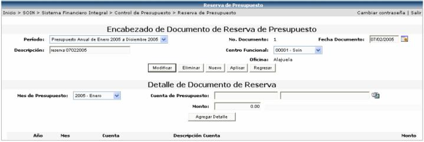

Esta opción ofrece la funcionalidad de realizar reservas de presupuesto para uno o más meses por centro funcional (se listarán solamente los centros funcionales que el usuario tiene permiso de reservar, según la seguridad que se explicará mas adelante en este manual).
Se debe de crear el encabezado del documento de Reserva, seleccionando un periodo, la fecha de creación (el sistema sugiere la fecha actual), una descripción y seleccionar un centro funcional.
Periodo: aquí se desplegarán los periodos que se han definido con anterioridad.
No. Documento: número consecutivo dado automáticamente por el sistema.
Centro Funcional: es el centro al que se le va a reservar el presupuesto (según los centros que el usuario tiene definidos con permiso para reservar).
Una vez creado el encabezado de la reserva de presupuesto, se deberá de crear el detalle del documento:

El año y el mes a seleccionar será dado según el tipo de periodo seleccionado en el encabezado. La oficina es dada automáticamente, según el centro funcional que se haya seleccionado.
Al seleccionar la Cuenta
de Presupuesto (las cuentas que se desplieguen en la lista serán las que
el usuario tiene autorizadas para realizarles reservas, según lo definido
en la seguridad), el sistema le desplegará el monto máximo disponible
a utilizar  o en su defecto le desplegará el mensaje que
la cuenta . Cabe recordar que el monto disponible es dado
según el Método de Cálculo de Control, definido para ese periodo para
esa cuenta, por ejemplo si el mes seleccionado es el actual y el método
de control es Acumulado, el disponible para ese mes será la suma de los
disponibles autorizados anteriores más el disponible de ese mes, menos
la suma de lo consumido. Mientras que si el mes seleccionado es un mes
futuro, el disponible será solamente el disponible autorizado para ese
mes ya que no se sabe con anterioridad cuanto dinero sobrará en los meses
anteriores.
o en su defecto le desplegará el mensaje que
la cuenta . Cabe recordar que el monto disponible es dado
según el Método de Cálculo de Control, definido para ese periodo para
esa cuenta, por ejemplo si el mes seleccionado es el actual y el método
de control es Acumulado, el disponible para ese mes será la suma de los
disponibles autorizados anteriores más el disponible de ese mes, menos
la suma de lo consumido. Mientras que si el mes seleccionado es un mes
futuro, el disponible será solamente el disponible autorizado para ese
mes ya que no se sabe con anterioridad cuanto dinero sobrará en los meses
anteriores.
Para aplicar un documento
de reserva de presupuesto se debe de presionar el botón  . El proceso de aplicación consiste en realizar una afectación
presupuestal, de Disponible a Reservado para las cuentas presupuestales
digitadas en el documento de Reserva, en los meses especificados, por
los montos definidos. Además hay que tomar en cuenta que antes de ocupar
lo que se reservo se tiene que liberar primero. (Esto se explicará en
la siguiente opción)
. El proceso de aplicación consiste en realizar una afectación
presupuestal, de Disponible a Reservado para las cuentas presupuestales
digitadas en el documento de Reserva, en los meses especificados, por
los montos definidos. Además hay que tomar en cuenta que antes de ocupar
lo que se reservo se tiene que liberar primero. (Esto se explicará en
la siguiente opción)